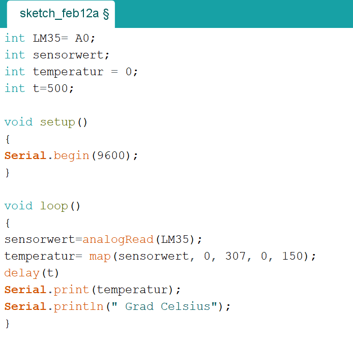

Fabacademy
Lesson 11 - Input Devices
Christian Schendera - Rhine-Waal University
This weeks Assignment
Group assignment
- Probe an input device's analog levels and digital signals
Individual assignment
- Measure something: add a sensor to a microcontroller board that you have designed and read it.
|
Learning outcomes
- Demonstrate workflows used in circuit board design and fabrication
- Implement and interpret programming protocols
|
Have you?
- Described your design and fabrication process using words/images/screenshots or linked to previous examples.
- Explained the programming process/es you used and how the microcontroller datasheet helped you.
- Explained problems and how you fixed them
- Included original design files and code
|
Assignment
My input device this week is to read the tempurature with my Arduino Uno
|
I am using the LM35
According to the datasheet it has VCC on the left, GRD on the right and in the middle Output
|

same procedure on the physical temeprature sensor
|
|

the sensor should be connected to A0
the value "t" sets the time interval when the sensor should measure the temeperature
convert of the value with "map" command
"serial.print" shows the degree on the screen
|
|
taking an object which should be monitored
|
|
works pretty well :)